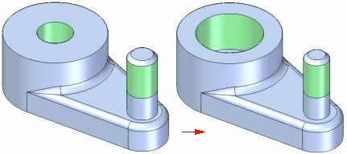

Editing threaded features
You can edit threaded features using the command bar. In most cases, you can also edit threaded features using the Variable Table:
-
For threaded hole features, you can edit the nominal diameter with the Variable Table.
-
For external threaded features, if you placed a driving dimension on the sketch circle for the cylindrical protrusion feature, you can edit the diameter using the Variable Table.

When editing the nominal diameter of a threaded feature using the variable table, if the new diameter matches an entry for the same thread family, the thread properties for that size will be automatically applied.
For example, if the original threaded hole was defined as a .50 nominal diameter hole with a 1/2–13 UNC thread, and you edit the nominal diameter in the variable table to .75, a 3/4-10 UNC thread will be automatically applied.
If you want to apply a 3/4-16 UNF thread instead, you must edit the feature using the command bar.
How do I
Add a thread reference to a featureLearn more
Threaded featuresDisplaying threads realistically in a shaded view
Available thread sizes with the Thread command
Depicting threads on drawings
Thread extent definition and tapered threads
Look up more details
Thread commandThread command bar (synchronous)
Thread command bar (ordered)
Thread Options dialog box (synchronous)
Thread Options dialog box (ordered)